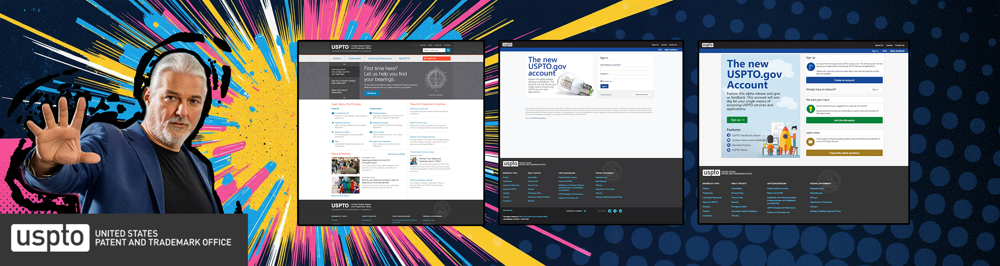

myUSPTO: Unifying Access with a Secure, Personalized SSO Platform
Vision, leadership, and innovation across security, accessibility, and scale
Project Overview
- Client: U.S. Patent & Trademark Office (USPTO)
- Role: Senior UX Designer / Information Architect (Lead)
- Timeline: 2014-08 – 2015-09
- Scope: SSO portal, personalized dashboard, modular widget framework
- Standards: FedRAMP; WCAG 2.0 / Section 508
Tools & Methods
- Axure
- Adobe (PS/AI)
- User & stakeholder interviews
- Workshops / whiteboarding
- Requirements analysis & data analytics
- Information architecture
- Interaction design & prototyping
Starting Point
USPTO was shifting away from paper-era authentication toward a modern access model, but users still faced fragmented logins, inconsistent experiences, and limited visibility across systems. A unified entry point was needed to simplify access, improve security posture, and create a foundation for future tools.
- Multiple credentials and disjointed login flows across Patent and Trademark systems.
- Inconsistent UI patterns and accessibility gaps slowed task completion.
- Limited personalization and weak cross-app visibility for critical work items.
- Compliance considerations (FedRAMP, 508) were handled late, creating rework.
Vision & Objectives
Deliver a single, branded portal that balances security with usability—providing SSO, a personalized dashboard, and an extensible widget ecosystem that scales as new workflows and tools come online.
- Unify authentication with SSO while strengthening auditability.
- Establish a personalized dashboard as the command center for tasks, alerts, and case status.
- Create a modular widget framework to accelerate future capabilities.
- Build accessibility and compliance into the design system from the start.
Leadership Moves
- Align stakeholders early: Facilitated interviews, workshops, and SME whiteboarding to surface pain points and define shared priorities across groups.
- Set a clear north star: Created journey maps and access diagrams to articulate “one portal, many roles,” guiding dashboard and widget strategy.
- Bake in compliance: Embedded FedRAMP and WCAG/508 requirements into patterns, reviews, and handoffs so compliance became continuous.
Innovation in Action
- Discovery & Research: Mapped authentication flows and role needs across Patent and Trademark; identified high‑value dashboard widgets.
- Definition & Prioritization: Structured a roadmap focusing on Docket, Alerts, Tasks, and Case Status as initial widgets with role-aware behaviors.
- Prototyping & Testing: Built Axure prototypes for SSO, personalization, and widgets; iterated via device‑wide stakeholder walkthroughs and usability checks.
- Systemization: Established an accessible design system and documentation to ensure consistency and accelerate future extensions.
Key Solutions
- myUSPTO SSO Portal: A unified, secure login with a personalized landing experience that centralizes access to tools and information.
- Modular Widget Ecosystem: Docket, Alerts, Task Manager, and Case Status widgets designed as plug‑and‑play, role‑aware modules for rapid expansion.
- Accessibility & Security by Design: Patterns and reviews aligned to FedRAMP and WCAG 2.0/Section 508; guidance embedded in the design system.
- Scalable IA & Governance: Information architecture and contribution guidelines to support new widgets, teams, and policies over time.
Impact & Results
- Security & Simplicity: Reduced authentication friction through SSO and clearer access pathways.
- Efficiency: Faster access to case alerts and work items via a personalized dashboard.
- Adoption: Broad stakeholder uptake driven by role‑aware widgets and consistent UX patterns.
- Scalability: Framework extended to additional widgets and portals without re‑architecting the core.
Lessons Learned
- Engage stakeholders early and often to build durable buy‑in.
- Balance security with usability through iterative, user‑centered testing.
- Systemize accessibility and compliance to prevent downstream rework.
- Design modularly to future‑proof against policy, product, and platform shifts.
Forward Look
- Expand the widget library and deepen metrics on adoption and efficiency.
- Maintain ongoing security and accessibility audits with clear governance.
- Continue real‑user testing alongside analytics to validate outcomes.
- Reuse the modular framework for adjacent USPTO portals and partner integrations.